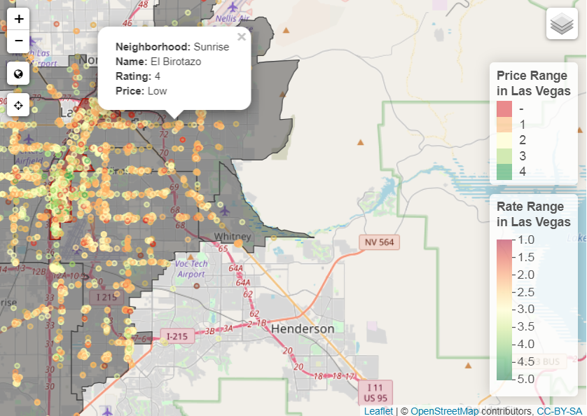
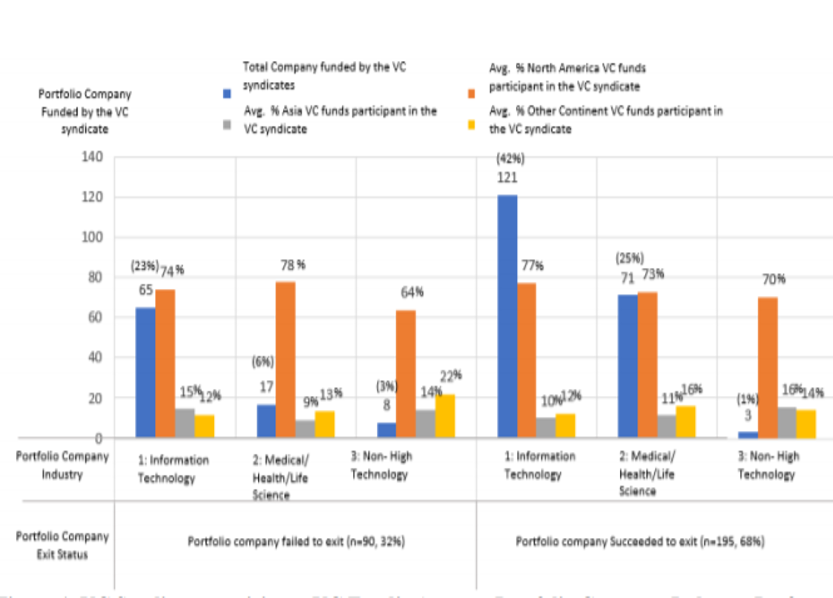
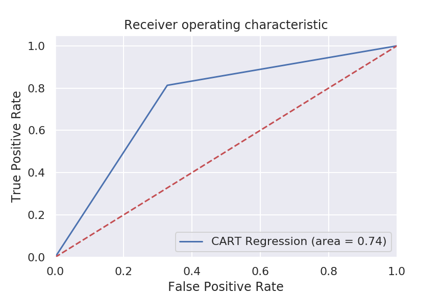
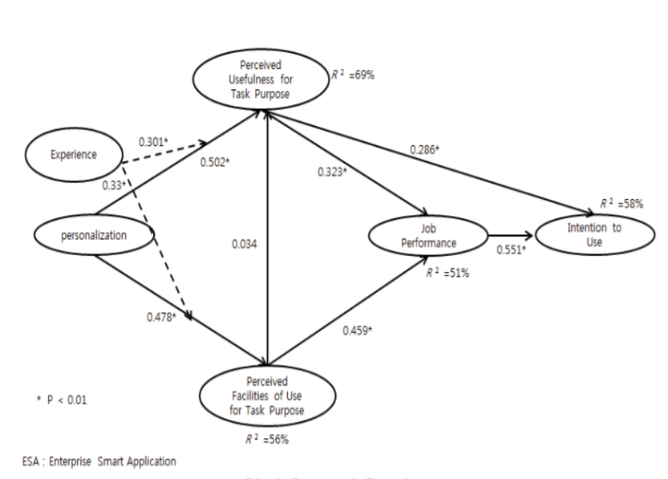
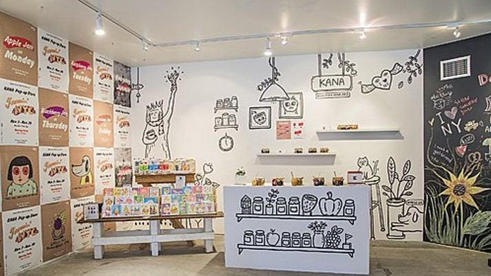

VL
Veronica is a Data Scientist/Quantitative Researcher who is interested in the business applications of data-driven insights. She specializes in developing investment strategies through financial analysis and full stack computational data analytics including data mining, descriptive analysis and visualization, statistical modeling, and machine learning. Currently, she is a data scientist at HWE, a Commercial Real Estate investment company. Previously, she analyzed Market/Credit Portfolio Risk at Bank of America Merrill Lynch, and assisted Strategy research projects at Columbia Business School & HEC Paris.

A geo-spatial/NLP analysis of Las Vegas restaurant reviews attributable to geographically varied consumer preferences. I mainly used R, QGIS, ggplot, Leaflet and Markdown.

Published in Journal of Internet Technology (JIT). I conducted social network analysis, using networks and graph theory, on the Domestic-Foreign cross-border Venture Capital syndications in the U.S. to explore the syndication's chance to acheive successful "Exit" (i.e., IPO or M&A) of its portfolio companies.

A Machine Learning project conducting NLP analysis of the CEO's letters to shareholders extracted from 10-K reports and classifying CEO's psychological types. Based on CEO's psychological type linked to her verbiage, predicting CEO's propensity to execute company acquisition. I used Python, SQL, NLTK, Numpy, Sklearn and Matplotlib for this project. Presentation deck located here.

Published in International Conference on Applied Business Research (ICABR). Empirical statistical analysis on hypothesis that users' usage intention of enterprise smart application may influence her job performance.
I currently work as a Business Director of 501(c)3 Nonprofit Arts Organization, NY KANA. As a Wannabe Artist and Professional Strategist, I've been leading 50+ creative professionals, raising funds for philanthropic projects and building business strategies. We introduce up-and-coming Korean artists to the New York Community and connect Korean creative professionals based in New York.
Inviting three senior-to-director level creative professionals from select art fields for a panel discussion open to the public. Over 500+ participants have joined our discussions.
Providing facial painting to the local Harlem community and event participants. Over 500+ attendees received our event props and facial painting.

NYC’s largest social event for Korean creative professionals. Over 500+ attendees have participated.
I'm a Data Scientist/Quantitative Researcher in the finance industry. I have a Bachelor's degree in Economics and Chinese from the University of Virginia and a Master's degree in Quantitative Methods in the Social Sciences (Data Science Focus) from Columbia University. I also graduated from The Data Incubator Fellowship for STEM Ph.D. and Masters holders. Currently, I'm a data scientist at HWE, a commercial real estate investment company. Previously, I worked at Bank of America Merrill Lynch as a Portfolio Risk Analyst in Market Risk/Counterparty Credit Risk. Outside of work, I lead philanthropic projects at the non-profit arts organization, NY KANA, which are open to the public community.
RésuméSkills
Financial Modeling
Python / R / SQL / Git
MapReduce / Hadoop / Spark / TensorFlow
Bokeh / Shiny / D3 / Flask / Heroku / Tableau
QGIS / GeoDa / Leaflet / CartoDB
Stata / SPSS
Natural Language Processing (NLTK)
Distributed Computing and Database Management
Web Scraping
M.A. in Quantitative Methods (Columbia, NY)
Quantitative Theory and Methodology
Statistical Machine Learning
Applied Data Science
Data Analysis
Data Visualizaiton
GIS & Spatial Analysis
Linear Algebra